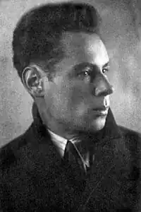
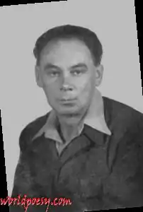
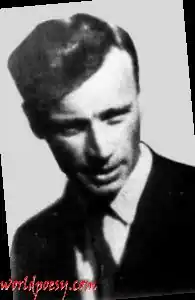

Олекса Коронатович Стефанович (5 жовтня, 1899, Милятин, Рівненська область — 4 січня 1970, Баффало) — український поет, літературний критик. Родом з с. Милятина на Волині; з 1922 на еміграції в Празі, де відвідував Карлів університет, від 1944 жив у Німеччині, від 1949 у США.
Народився 5 жовтня 1899 р. у с. Милятині Острозького повіту на Волині в родині православного священика. Закінчив духовну школу в Клевані (1914), потім духовну семінарію в Житомирі (1919). У 1920–1921 рр. учителював у с. Садки. З 1922 р. мешкав у Празі. Навчався на філософському факультеті Карлового університету (1922–1928), у 1930 р. захистив докторат із філософії (тема дисертації — "Метлинський як поет"). Викладав на філософському факультетіУкраїнського вільного університету (1928–1930). У 1939–1941 рр. працював домашнім учителем. У 1944 році, коли до Праги підійшли радянські війська, Олекса Стефанович, рятуючи власне життя і волю, залишає Прагу й емігрує до Німеччини, де проживає до 1949 року, а з 1949 р. — у м. Боффало (США). Працював на фабриці, після виходу на пенсію (з 1962 р.) учителем в українській православній суботній школі. Помер 4 січня 1970 р. в м. Боффало, шт. Нью-Йорк, похований там же, перепохований на цвинтарі в Бавнд-Бруку. Життя Олекси Стефановича було сповнене постійних духовних пошуків та глибоких роздумів. Він жив дуже самотньо, коло його знайомих і товаришів було обмеженим і вузьким, відчуття страху та манія переслідування з боку радянської влади до самої смерті не залишали поета.
Творчість Друкувався в "Новій Україні", "ЛНВ", "Пробоєм", "Христ. Шляху", "Новому Шляху", "Христ. Голосі" й ін. Зб. поезій: "Поезії" (1927), "Stefanos І" (не датована, 1938) і "Зібрані твори" (1975), що включають недруковані зб. "Stefanos II", "Кінецьсвітне" та "Фраґменти". Хоч С. належав до празької групи, його творчість позбавлена характеристичного для цього кола волюнтаризму. Поетична творчість С. живиться спогадами про елегійні волинські краєвиди, постаті минулого (іст. чи мітологічні) і трагічні картини історії й сучасности. Ці тематичні площини пронизані двома силами, які розривали творчість Стефановича, — поганством (з обертонами еротики) і християнством, яке домінувало в пізнішій творчості поета і часто сягало містичних вершин. Основною характеристикою стилю Стефановича є його дуже індивідуальна поетична мова, базована на вживанні архаїзмів і неологізмів (теж творених в архаїчно-ритуальному дусі) та на своєрідній синтаксі. У ранній творчості Стефановича переважають романтично-символістичні елементи (образно споріднені з народною творчістю), у пізнішій його мова стає рубаною і загостреною, поет часто ламає ритміку в різких спадистих каденціях, що дає відчуття рокованости, кінецьсвітности, апокаліптичности. Олекса Стефанович, філософ за своєю мистецькою натурою, заглиблюється думкою і почуттям у внутрішній сенс ідеї державності, звертається до перших її витоків і проектує їх на сучасну добу. Так, через усю двадцятирічну творчість поета проходить образ язичницького бога Перуна, що є символом ідеї української державності, утвердженням її безсмертності і всепереможності. Попри те, що Стефанович жив і писав на еміграції, Україна залишається центральним образом його творчості. З далеких країв він спостерігає за її життям, за тими перипетіями, які вона переживала. І це знаходить відгук у його творчості. Автор поетичних збірок "Поезії" (1927), "Stefanos І" (1938), "Зібрані твори" (1975, посмертно).